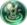
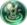
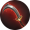

Urso Gigante
 Correntezas
Sacrifício
Garra de Lâmina
Granito
 Bênção
Bênção
Este é um site feito por fã em homenagem ao Champions Legion!
Urso Gigante
 Correntezas
Sacrifício
Garra de Lâmina
Granito
Bênção
Keth executa bem a função de tank da jungle. O inali e o capacete de patrulheiro() permitem que ele farme a jungle num tempo bom. Sua primeira habilidade fornece a velocidade necessária para encaixar um gank e sua ultimate por ter baixo cooldown estará sempre ativa para causar dano nos ganks. Além disso, o golem azul da jungle corrige um dos problemas do Keth que é o alto custo de mana nas habilidades.
Como qualquer jungler, Keth deve farmar a selva, dar bons ganks e garantir o abate de monstros épicos.
Ordem de compra dos itens: Inicie com a faca de caça(), compre o capacete de patrulheiro. Pode comprar os demais itens na ordem. Vale ressaltar que itens de defesa devem ser comprados mediante a necessidade. Compre itens que sirvam para tankar o dano mais forte do time inimigo. Late game o capacete de patrulheiro deve ser trocado por um item de defesa adequado.
Ordem de upgrade das habilidades: 3ª → 1ª e 2ª.